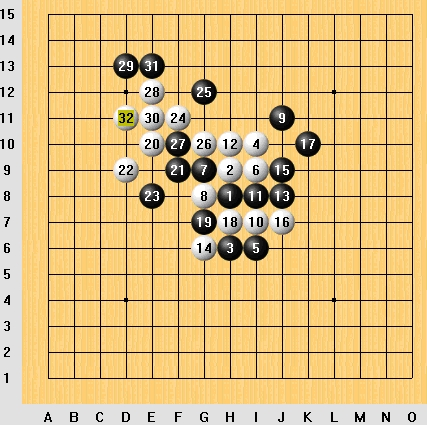

请教．
请教．个人觉得这盘棋比较精彩，白16不知是不是一个骗？
看看老帖子http://www.pinqi.net/forum/dispbbs.asp?boardID=7&ID=1667&page=3
<TABLE class=tablebody2 style="TABLE-LAYOUT: fixed; WORD-BREAK: break-all" width="90%" border=0><TBODY><TR><TD style="FONT-SIZE: 11pt; LINE-HEIGHT: 14pt" width="100%">请教．
这个１７Ｌ５他们说是必败．谁知道怎么杀．谢谢．
</TD></TR></TBODY></TABLE>
我怎么不能上传图片,谁能教教我!